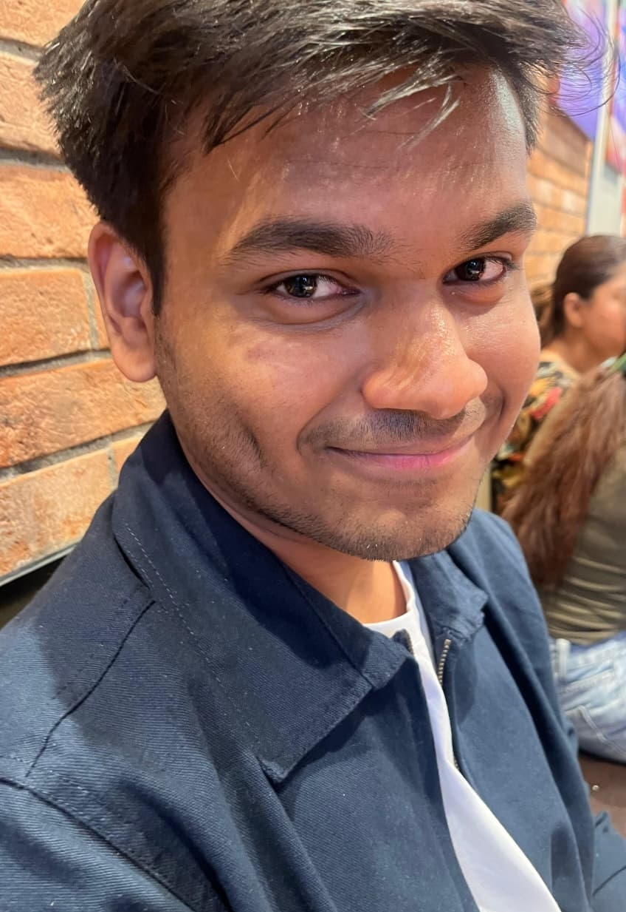

About Me:
Hello, I am Vardaan Goel. I am currently an undergraduate student at IIIT Hyderabad, pursuing B.Tech in Compute Science and MS in Geospatial Technology(CGD)
I have always liked logic and problem solving, hence I wanted to build my career in some Mathematics or Engineering field. Luckily, I was able to clear UGEE, gaining entry into IIIT Hyderabad, giving me a chance to turn my passion into reality.
After coming here, I have developed a keen interest in coding languages, mainly C and C++. I love complex topics like data structures, abstract algebra.
Apart from Academics, I have also started playing Ultimate Frisbee. I really enjoy the sport, which I feel is a perfect mix of competitiveness and fun. I spent the rest of my time(which is not much) watching shows, listening music, etc.
Education
| Nursery-12th | K.L. International School, Meerut | C.B.S.E. |
| Graduation | IIIT Hyderabad | B.Tech in CS + MS in Geospatial Technology |
Timeline
Other Milestones
- State Topper in Hindustan Olympiad 2023.
- Ranked 1 in Amar Ujala National Olympiad 2025, received a trophy and a laptop.
- Scored 100 percentile in Mathematics and 99.7 percentile in GAT in CUET 2025.